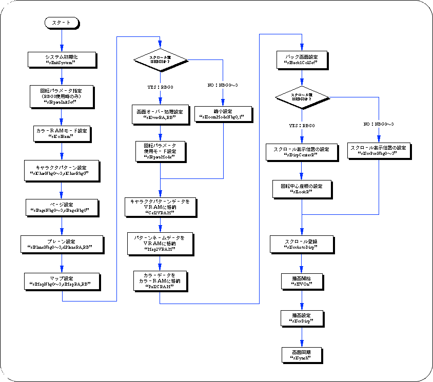

Return to previous page | Return to menu | Go to next page
Here, the flow from the initialization of scroll data to the actual drawing is shown in the flowchart, and it is summarized from the scroll function setting to the drawing.

If VRAM or color RAM is accessed during the monitor display period, noise will be generated on the monitor.
For this reason, access to these two RAM areas is performed during the monitor non-display period (during blanking) using the function “slSynch” or the scroll drawing process is interrupted using the function “slTVOff”. Then either execute the method or use the function “slScrDisp” to turn the drawing setting OFF and access an inaccessible VRAM bank.